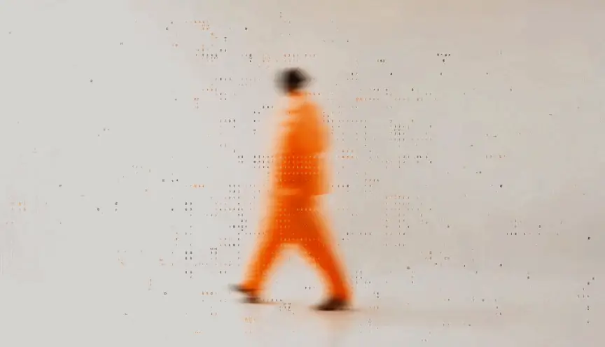
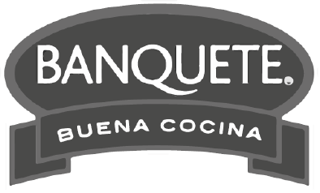

Creativid4d
Transformamos el conocimiento en ideas que conectan con las personas y mueven el negocio.

Creative / Data
La ciencia
→ de las ideas.
Hacemos que las ideas aprendan, se adapten y evolucionen.
Qué hacemos
Convertimos datos en conocimiento, conocimiento en ideas e ideas en resultados.
Transformamos el conocimiento en ideas que conectan con las personas y mueven el negocio.
Analizamos para encontrar las verdades detrás de lo que las personas hacen. Basta de suposiciones.
Creamos plataformas que aprenden, se adaptan y mejoran en tiempo real.
La data te da la base, pero quedarte ahí te hace predecible. Con D-3motion (Data + Emoción) descubrimos el “lado B” de tus números.
01 · La data
Miramos los números para saber exactamente dónde estamos.
La gente toma café para activarse y ser productiva. Lo tradicional: una promo matutina enfocada en energía. Correcto, pero predecible.
02 · El eureka
Vemos lo mismo que los demás, pero encontramos el camino que tu competencia no ve.
Hablamos de lo que el café hace por las personas, no de lo que hacen mientras lo toman. Por estar siempre haciendo cosas, dejamos de disfrutarlo.
03 · La idea
Convertimos ese descubrimiento en una idea que se siente.
“Toma café como si fuera domingo”: 10 minutos sin hacer nada, sin celular y sin productividad.
01 · Revelación de evidencia
Un modelo analítico de 4 dimensiones que deja atrás las suposiciones: te mostramos si lo que tu consumidor siente por la marca se traduce en acciones concretas.
02 · Modelamiento predictivo
Pasa de analizar el pasado a predecir tu éxito. Diseñamos la estrategia con ciencia de datos para simular escenarios y bajar la incertidumbre.
03 · Desarrollo de la big idea
De los datos a la big idea. Desbloqueamos el valor emocional de tu marca para que tu mensaje no solo se vea, sino que se sienta.
04 · Experimentación y escalamiento
Menos riesgo, más impacto. Pruebas de campo controladas hasta dar con la variante creativa exacta que hace crecer a tu marca.
05 · Aprendizaje continuo
Cada campaña alimenta un “cerebro” exclusivo de tu negocio, para que la próxima estrategia arranque con ventaja y nunca desde cero.
Nada de lo que hacemos por tu marca ocurre por azar. En f3nômen4 ocurre por diseño.
trabajando creatividad y marketing.
invertidos en medios en los últimos 24 meses.
han confiado en nosotros.
a través de campañas exitosas.
Donde otros ven → datos,
nosotros vemos resultados futuros.
Ideas que nacen de un dato y terminan moviendo el negocio.
Volvo Trucks
El oficio de camionero se hereda de generación en generación y deja fuera a muchas mujeres. Creamos un programa para entregarles las herramientas que no heredaron.
+211%inscripciones vs. edición anterior · Premio EIKON
Volvo Camiones y Buses
Solo 4 de cada 10 mujeres se hace una mamografía preventiva anual. Transformamos el lenguaje de seguridad de la ruta en un tutorial de autoexamen.
4 de 10el dato que dio origen a la idea
Banquete
Todos queremos comer legumbres, pero dejarlas remojando la noche anterior ya no es para cualquiera. Hablamos desde la innovación: el futuro de las legumbres.
Nuevo estándarinnovación en una categoría tradicional
Tucapel
Nadie sabe lo que tiene hasta que lo pierde. Una campaña para recordar el lugar del arroz en la mesa chilena.
+25MMviews · 87% de views al 100%
Fundación Sembrar Futuro
Un niño sin vínculos seguros puede vivir niveles de estrés comparables a los de un soldado en guerra. Llevamos esa guerra invisible a los lugares donde debería sentirse seguro.
Zona seguradel dato social a la calle
UACh
Una admisión difícil, transformada con data y creatividad en un resultado histórico.
3.783matriculados · +58% vs. admisión anterior
